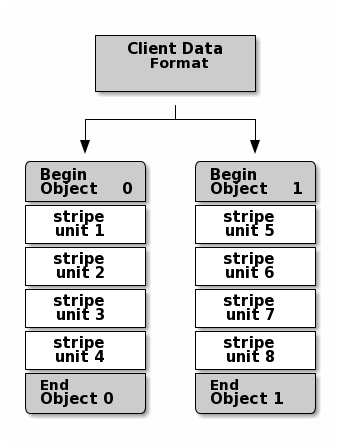

数据分段
存储设备有吞吐量限制，这会影响性能和可伸缩性。因此，存储系统通常支持跨多个存储设备分段存储顺序信息，以提高吞吐量和性能。
RAID是最常见的数据分条形式。与Ceph的条带化最相似的RAID类型是raid0，或“条带卷”。Ceph的分条提供了RAID 0分条的吞吐量，n-way RAID镜像的可靠性和更快的恢复。
Ceph存储集群中Ceph存储的对象没有条带化。Ceph对象存储、Ceph块设备和Ceph文件系统在多个Ceph存储集群对象上条带化它们的数据。
通过librados直接写入Ceph存储集群的Ceph客户端必须为自己执行条带化（和并行I/O）以获得这些好处。
最简单的Ceph条带格式涉及1个对象的条带计数。Ceph客户端将条带单元写入Ceph存储群集对象，直到该对象达到最大容量，然后为额外的数据条带创建另一个对象。
最简单的条带化形式对于小块设备图像、S3或Swift对象和cepfs文件就足够了。
然而，这种简单的形式并没有最大限度地利用Ceph在放置组之间分发数据的能力，因此并没有极大地提高性能。下图描述了条带化的最简单形式：

如果预期会有较大的镜像、较大的S3或Swift对象（例如，视频）或较大的cepfs目录，那么通过在对象集中的多个对象上对客户端数据进行条带化，会有相当大的读/写性能改进。
当客户端并行地将条带单元写入相应的对象时，会显著提升写入性能。由于对象被映射到不同的放置组并进一步映射到不同的OSD，因此每次写入都以最大的写入速度并行进行。
对单个磁盘的写入将受到磁头移动（例如，每次寻道6ms）和该设备带宽（例如，100MB/s）的限制。
通过将写操作扩展到多个对象（映射到不同的放置组和OSD），Ceph可以减少每个驱动器的寻道次数，并结合多个驱动器的吞吐量，以实现更快的写（或读）速度。
在下面的图中，客户端数据在由4个对象组成的对象集(下图中的对象集1)上进行分条， 其中第一个分条单元是对象0中的分条单元0，第四个分条单元是对象3中的分条单元3。 写入第四个分条后，客户端确定对象集是否已满。 如果对象集未满，客户端将开始再次向第一个对象(下图中的对象0)写入条带。 如果对象集已满，客户端将创建一个新的对象集(下图中的对象集2)， 并开始写入新对象集(下图中的对象4)中的第一个对象中的第一个条带(条带单元16)。

决定Ceph条带化数据的方式的三个重要变量:
- 对象大小：
Ceph存储集群中的对象具有最大可配置大小（例如，2MB、4MB等）。对象大小应该足够大以容纳多个条带单位，并且应该是条带单位的倍数 - 条带宽度：条带具有可配置的单元大小（例如64kb）。
Ceph客户端将要写入对象的数据划分为大小相等的条带单元，但最后一个条带单元除外。条带宽度应该是对象大小的一小部分，这样一个对象可以包含许多条纹单位。 - 条带计数：
Ceph客户端在由条带计数确定的一系列对象上写入条带单元序列。这一系列对象被称为对象集。Ceph客户端写入对象集中的最后一个对象后，它返回到对象集中的第一个对象
一旦Ceph客户端将数据分条到条带单元并将条带单元映射到对象，Ceph的CRUSH算法将对象映射到放置组，并将放置组映射到ceph osd守护进程，然后将对象作为文件存储在存储磁盘上